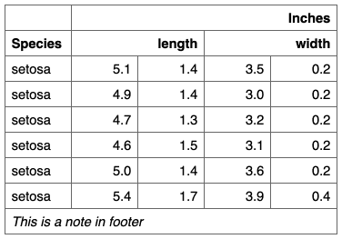

| add_header {flextable} | R Documentation |
Add rows of labels in the flextable's header or footer part. It can be inserted at the top or the bottom of the part. The function is column oriented, labels are specified for each columns, there can be more than a label - resulting in more than a new row.
add_header(x, top = TRUE, ..., values = NULL) add_footer(x, top = TRUE, ..., values = NULL)
x |
a |
top |
should the rows be inserted at the top or the bottom. |
... |
a named list (names are data colnames) of strings
specifying corresponding values to add. It is important
to insert data of the same type as the original data,
otherwise it will be transformed (probably into strings if
you add a |
values |
a list of name-value pairs of labels or values,
names should be existing col_key values. This argument can be used
instead of |

when repeating values, they can be merged together with
function merge_h() and merge_v().
Other headers and footers:
add_header_lines(),
add_header_row(),
set_header_footer_df,
set_header_labels()
ft <- flextable( head( iris ),
col_keys = c("Species", "Sepal.Length", "Petal.Length",
"Sepal.Width", "Petal.Width") )
# start with no header
ft <- delete_part(ft, part = "header")
# add a line of row
ft <- add_header(x = ft, Sepal.Length = "length",
Sepal.Width = "width", Petal.Length = "length",
Petal.Width = "width", Species = "Species", top = FALSE )
# add another line of row at the top position
ft <- add_header(ft, Sepal.Length = "Inches",
Sepal.Width = "Inches", Petal.Length = "Inches",
Petal.Width = "Inches", top = TRUE )
# merge horizontally when there are identical values
ft <- merge_h(ft, part = "header")
# add a footnote in the footer part
ft <- add_footer(ft, Species = "This is a note in footer" )
ft <- merge_at(ft, j = 1:5, part = "footer")
# theme the table
ft <- theme_box(ft)
ft